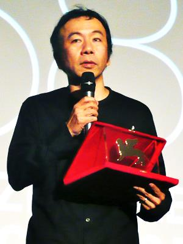
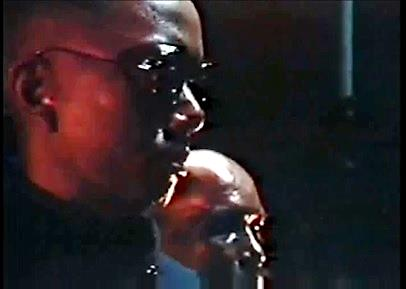
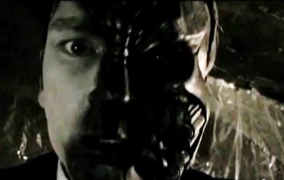
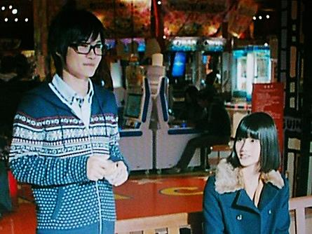

巽教授による評論に関しましては、著作権法に抵触しますのでWeb上には掲載いたしません。(ウェブ担当)
塚本晋也 1960年元旦生れ。日本大学藝術学部卒。 中学２年生の時から映像制作を始める。日藝卒業後、CF制作会社に四年間勤める。退社後の’85年に自前の制作集団「海獣シアター」を結成する。『普通サイズの怪人』（'86）の内容を発展させる形で作ったという本作が、その年のローマ国際ファンタスティック映画祭（一種のカルト映画の祭典）グランプリを受賞。彼の出世作となる。俳優としても活動しており、自らの作品以外にも出演する。画像は『KOTOKO』が評価されたヴェネチア国際映画祭にて。

| (‘89)鉄男THE IRON MAN | ローマ国際ファンタスティック映画祭グランプリ |
| (‘90)ヒルコ／妖怪ハンター |
原作は諸星大二郎のマンガ『妖怪ハンター』第一話「黒い探究者」。主演:沢田研二 |
| (’92)鉄男Ⅱ BODY HAMMER | ポルト国際映画祭（inポルトガル）審査員特別賞ほか |
| (’95)東京フィスト | サンダンス・フィルム・フェスティバル（in東京）グランプリほか |
| (’98)バレット・バレエ | スウェーデンファンタジーフィルムフェスティバルグランプリ |
| (’99)双生児 | 釜山国際映画祭観客賞ほか。原作:江戸川乱歩、主演:本木雅弘 |
| (’02)六月の蛇 | ヴェネチア国際映画祭審査員特別大賞ほか |
| (‘04)ヴィタール | ブリュッセル国際映画祭銀鴉賞ほか。主演:浅野忠信 |
| (‘05)HAZE | |
| (‘06)悪夢探偵 | ’07年ヒホン映画祭（inスペイン）功労賞ほか。主演:松田龍平 |
| (‘08)悪夢探偵２ | |
| (‘09)鉄男THE BULLET MAN | ’09年シッチェス・カタロニア国際映画祭（inスペイン）名誉賞ほか |
| (‘11)KOTOKO | ヴェネチア国際映画祭オリゾンティ部門グランプリほか |
 |
 |
『鉄男』（以下、Ⅰ）の後に作った『鉄男Ⅱ』（以下、Ⅱ）は、カラーで、前作より遥かにわかりやすい内容となっている。あと、Ⅱでは露骨にサイバーパンクな男がでてくる（画像）。ⅡにはⅠと共通する俳優が出演しているが、Ⅰとの関連は無い。塚本は’93年に渡米し、Ⅱの宣伝活動の傍ら、『パルプ・フィクション』を撮影中のクエンティン・タランティーノらと「北米版鉄男」の企画の話をした（そしてそれきりになった）。この鉄男in USAの企画は、後になって『鉄男THE BULLET MAN』として結実。全編英語の作品となった。またしてもⅠ、Ⅱとの関連は無い。ちなみに本作は、Ⅱの制作に関わっていた深谷陽によって、ビームコミックスでコミカライズされている。Ⅱ、北米版とも、それぞれの時期の塚本の作風、テーマが反映されていて面白い。（画像左上はⅡ、左はTHE BULLET MANより）
制作……海獣シアター
監督・脚本・撮影・特殊効果・美術・照明・編集……塚本晋也
キャスト……あらすじを参照
音楽……石川忠（塚本映画のほとんどに渡って担当）
ある朝、サラリーマンの男（田口トモロヲ）が目覚めると、頬に金属のトゲのようなにきびが出来ていた。出勤途中のプラットホーム。事務員風の眼鏡の女（叶岡伸）が、金属と溶け合い膨張した腕を振りかざして男を襲う。無意識に眼鏡の女を殴り倒した男の、その恐ろしい力をたぎらせた腕は、カサブタのような金属に被われ、熱を噴き上げていた。激しい痛みを伴い、次第に金属に侵蝕されていく男の肉体。ついに金属は顔面の半分を被い、ペニスにまで広がる。男は忽然と作動してしまった股間のドリルペニスで、恋人の女（藤原京）を犯し殺してしまう。その時、電話のベルが鳴る。電話の主は、かつて男と女がひき逃げした、“やつ”（塚本晋也）。彼はその事故により、脳に金属片が刺さってしまったのだ。“やつ”は男に復讐を果たすため、金属テレパシーの力で男を弾き飛ばしながら、激烈なスピードで男のもとへ向かってくる。こうして“やつ”と金属の塊と化した男の、サイキックな追跡戦が始まる。しかし、金属と完全に融合したはずの“やつ”の体に異変が起こった。体内に組み込まれた金属棒が錆びて腐り始めたのである。“やつ”は最後のエネルギーを振り絞り、凄まじい金属エネルギーを放出。周囲の工事群の機械たちを作動させ、男の金属化した肉体をさらに膨張させていく。だがやがて“やつ”は男と融合し、一つの巨大な金属の怪物となった。こうして誕生した憎悪の怪物兵器は、世界を鋼鉄化して錆び腐らせるべく、夜明けの都市を疾走し始めるのだった。
『ウルトラＱ』は、怖くて面白かったという自分の感情と一緒に思い出せる記憶です。放映時、僕は六歳でしたが、夢や記憶がモノクロであることが多いように、『ウルトラＱ』は、テレビで観たものなのか夢なのかわからなくなるほど、渾沌と僕のなかに残っています。日常の中に怪物がいるという感覚が大好きでした。モノクロの映像といい、悪夢のような感覚といい、その影響は早くも最初の劇場映画『鉄男』で爆発していますね。
（『塚本晋也読本』p.255）
公開当時、『鉄男』イコールサイバーパンクのように言われましたが、本当のところ『鉄男』を作っている間は、サイバーパンクという言葉を聞いたことさえありませんでした。僕が『鉄男』を撮り始める前に、「AKIRA」の連載が始まっていて、『鉄男』が一年半かかっている間に、「AKIRA」は劇場アニメ化されてました。原作に出てくる鉄雄は、当時まだ鉄にはなっていなかったんですけど、アニメでは鉄雄が鉄になってしまうシーンが描かれていた。それを観て、これはいかんとちょっと思いました。でも〔略〕特にタイトルを変えるようなこともしませんでした。それと楳図かずおさんの『わたしは慎吾(ママ)』での、工業機械が自分という意識を持ち始めて動き出すという着想に、『鉄男』の根本発想と近いものを感じました。〔略〕また、『鉄男』のお父さんと言えるデイヴィッド・クローネンバーグの映画では、人間と無機的なものが合体し始めていて、自分の気持ちにピッタリきました。
（〃pp.270-1）
ちなみに、諸星大二郎「生物都市」（'74）も同様の話。
『鉄男』は、物語には興味がなく、絵だけで見せているように言われましたが、〔略〕難解に作ろうだなんてまったく思わず、物語の前後関係を入れ替え差し替えして、観る人の興味をそそりたいと思っていたんですけれど、誰もそうは思ってくれなかったですね。はずしました。
（〃p.271）
高校生の時には、坂口安吾の『堕落論』のなかの日本文化私観を読んで、「いいなあ、これ」と思ったんです。美というのは、人が装飾を施したものではなく、必要最小限の機能として作られたものを客観的に見た時にあるというようなことが書かれていた。僕もデコラティブなものや人為的な装飾が嫌いで、鉄パイプであるとか、もともと機能として作られたものに美しさを感じるんです。『鉄男』には、そういう好みも入っていると思います。
（〃p.272）
鉄男の二本のシリーズ〔Ⅰ、Ⅱ〕は、現在の日本、東京を描いているヘンテコな映画として、世界中の人に興味を持ってもらえた。「都市と人間」というテーマに気づかせてもらったのも海外のジャーナリストたちによってだった。〔略〕〔最新作を含む〕三本の映画とも、一人のサラリーマンが、性懲りもなく鉄人間と化し、凶暴性を発揮していく様が描かれているが、時代の移ろいとともにそこに流れる精神はずいぶん変わった。初代「鉄男」のテーマ、エロと破壊と官能、から、「鉄男THE BULLET MAN」では暴力を使うか使わないかの選択が問われている。
（『鉄男全集』pp.1-2）
『六月の蛇』では道郎という名前がついていますが、僕が映画のなかに登場して、声で人を操るのはいつも〝ヤツ″という存在です。僕が自作で演じる場合のいわばライフワーク的な役柄です。平たく言えば、都市で生きているのですが、実際に人と直接会ってコミュニケーションをとるとこと(ママ)がうまくできない男です。普段はそんなにしゃべらないんですけれども、電話とかそういう道具を使うことで伸び伸びできるキャラクターっていうんですかね。最悪なやつです（笑）。だいたい電話という物は何か怖いものでもあると思うんです。人の家に突然入り込んでくるわけですし。以前はリーンという大きなベル音でしたから余計そうですよね。今は発信者が通知されていれば誰からの電話が分かりますけれども、かつては誰からの電話かもまったく分かりませんでしたから。電話に出た時に普通の声が開こえてくれば安心しますけれども、いつなんどきどんな怖い声が入ってくるか分からない。僕はそれも都市に生きている恐怖のひとつだと思ったんです。
（『塚本晋也読本』p.292）
この時〔Ⅱ制作の時〕は意識してサイバーパンクのニュアンスを入れようとして、サイバーパンクという言葉を使ったら、「もういいんじゃないの、サイバーパンクは」と軽く言う人がいて、いやだなあって思った記憶があります。アメリカに『鉄男Ⅱ』を持っていった時は、サイバーパンクをきちんと研究している人たちがいて、僕の映画についても討論会で真剣にディスカッションされていた。でも日本ではもう勝手に言葉を消費して、古いからいいんじゃないのというのが大多数の姿勢だったので、しょうがないなーと思いました。
（〃p.275）

『桐島、部活やめるってよ』（監督:吉田大八、2012）で、映画好きのオタク系男子・前田涼也（神木隆之介）と、彼と中学が同じだったが高校から疎遠になってしまったリア充系女子・東原かすみ（橋本愛）とが映画館で偶然遭遇してあっ…ってなる場面があったのだが、その時上映されているのが『鉄男』のチ〇コドリルのところだった。左の画像は、たしか劇場の外で「キ、キミも『鉄男』とか見るんだね…！ ボっ、ボクが好きな監督はねぇ…！」（うろ覚え）とか映画談議している場面。WOWWOWオンラインでの町山智浩の解説動画に以下のような部分があると知ったので、確認して文字起しした。前田という人は別に町山の言うようなギラギラした奴ではなかったが、内面はわからんよと言われたらまあそうなのかも。
あと日曜日にですね、前田君が映画に行ってですね、その観てる映画が『鉄男』っていう映画なんですね。で、そこで橋本愛ちゃん、かすみと出会うんですけれども、それで、この〔彼らが〕観てる『鉄男』っていうその〔映画は〕塚本晋也監督の映画で、どういうシーンかっていうと、ペニスがドリルになって、それで女の子の股間を貫通して殺すっていうシーンが出てくるんですね、ここで。これはもうすごくわかりやすいですね。これはものすごい性的コンプレックスと攻撃性ですよね。で、それが前田君の中にあるんですね。もちろんこれは伏線になってますね。だから単に『鉄男』を観てるっていうのじゃないんですね、ここはね。前田君の心の中をのぞいてるんですよ。で、それを、かすみちゃんものぞいてくれたんですね……っていうシーンなんですよね、これは。
町山智浩の映画塾！＃94 『桐島、部活やめるってよ』＜予習編＞
http://www.wowow.co.jp/pg_info/detail/103542/ 21分39秒～22分27秒
{kind=link}
{kind=link}